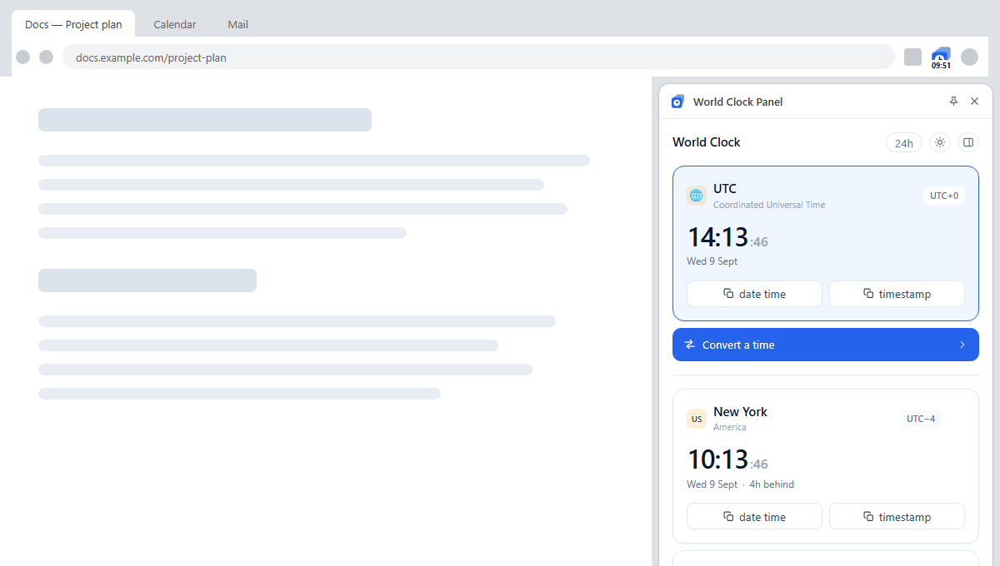
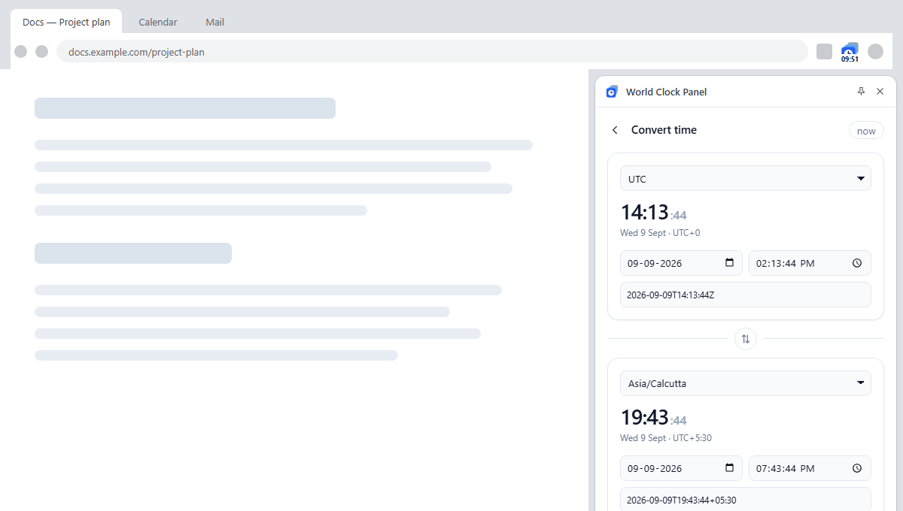
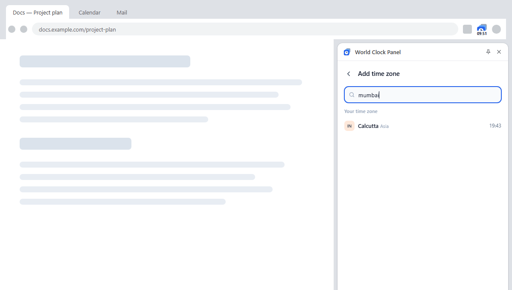

Your unified time centre. UTC and every zone you work with, docked in Chrome's side panel — beside your work instead of on top of it.

Most clock extensions are a popup that closes the moment you click away. This one stays open, and gets the hard parts right.
Check the install prompt — it asks for nothing. It cannot read, change or even see the pages you visit.
Mumbai, Bengaluru, NYC, Vegas, Joburg and hundreds more resolve to the right zone. No need to know that Mumbai lives in Asia/Calcutta.
Copy gives you 2026-09-09T12:08:40+05:30 — the zone's real offset, with Z only where the offset is truly zero.
Offsets come from the browser's own time zone database, including the ambiguous hour that happens twice every autumn.
Set a time in one zone, read it in another. Edit either side — including pasting an ISO or Unix timestamp.
Each zone is tinted by its local time of day, so you know whether it's a reasonable hour before you call.
Both directions stay in sync, and the zone list understands the names people actually use.


There is no server. The extension makes no network requests of any kind, and it requests no host permissions, so it has no ability to observe your browsing.
chrome.storage.local